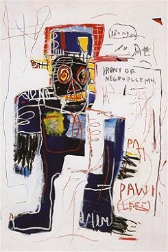

Irony of Negro Policeman
Jean-Michel Basquiat · 1981 · Acrylic and oilstick on wood · 122 × 183 cm · Private collection
In copyright. Look and learn: shown for study, not for download.
Basquiat painted this on a wood panel in the basement of the Annina Nosei Gallery in New York, where the dealer gave him studio space after he joined her in September 1981. He was twenty and had moved from the street to the gallery that year. The title is written on the panel with the vowels left out of policeman. The painting sold for $12.6 million at a Phillips auction in 2012.